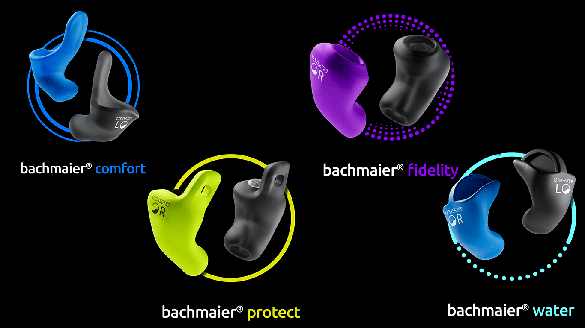
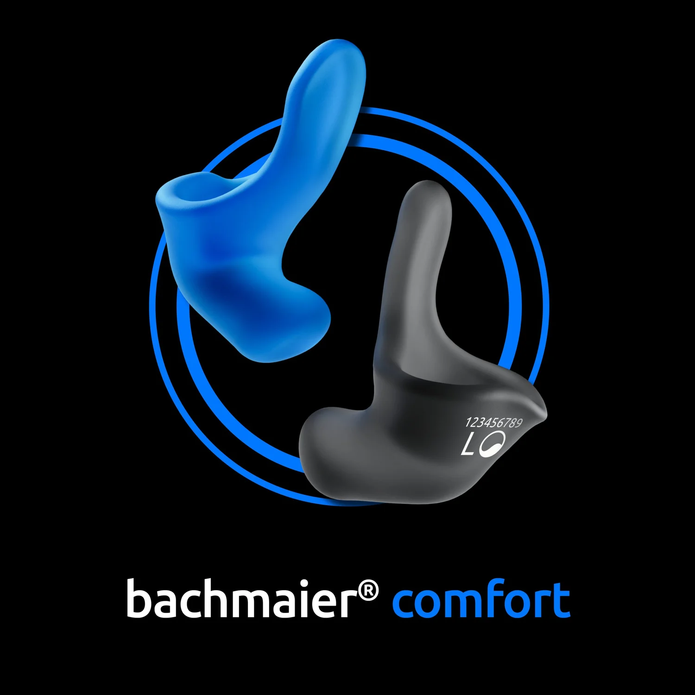
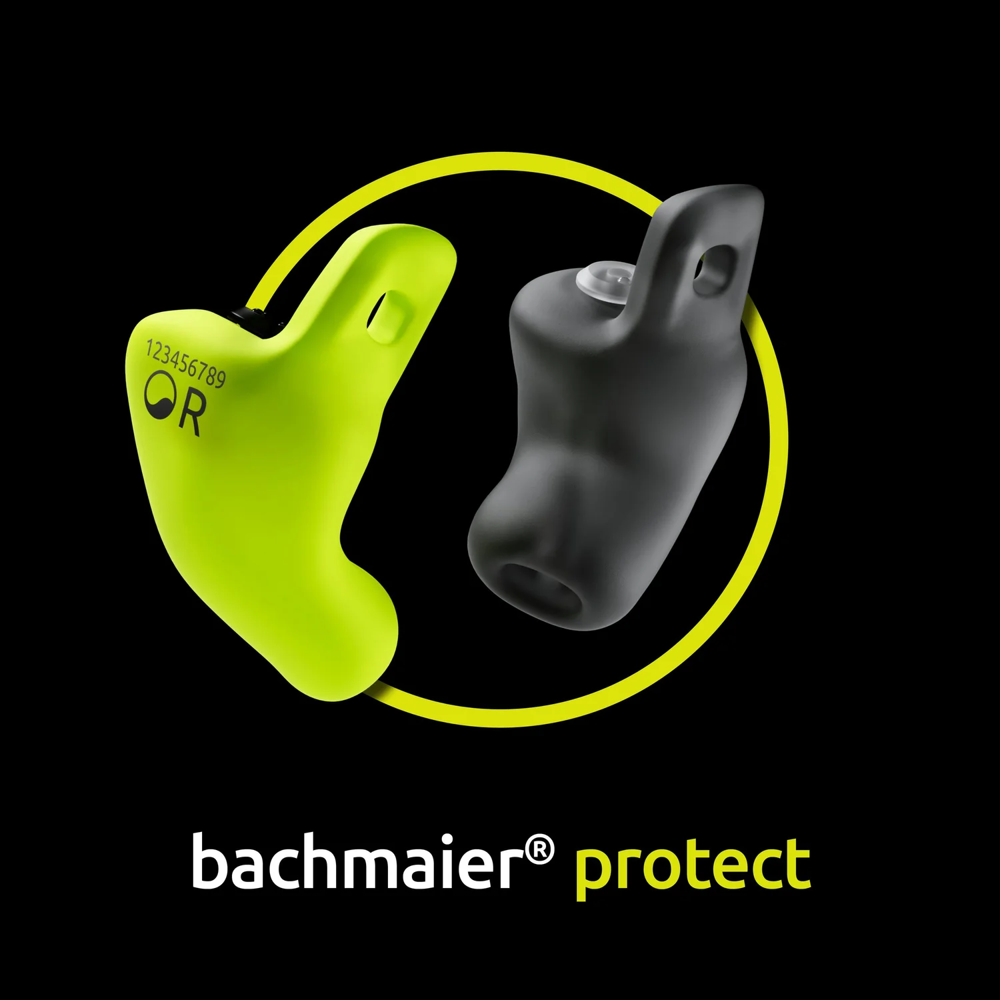
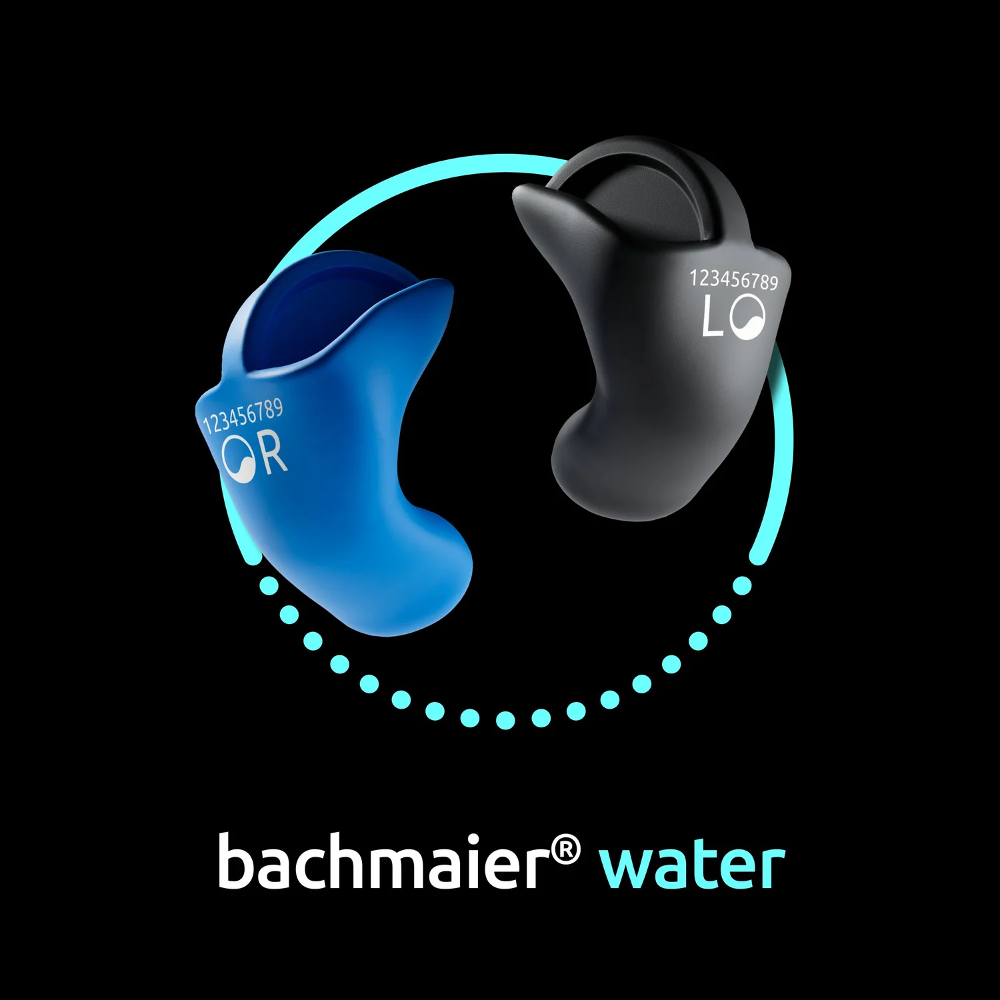
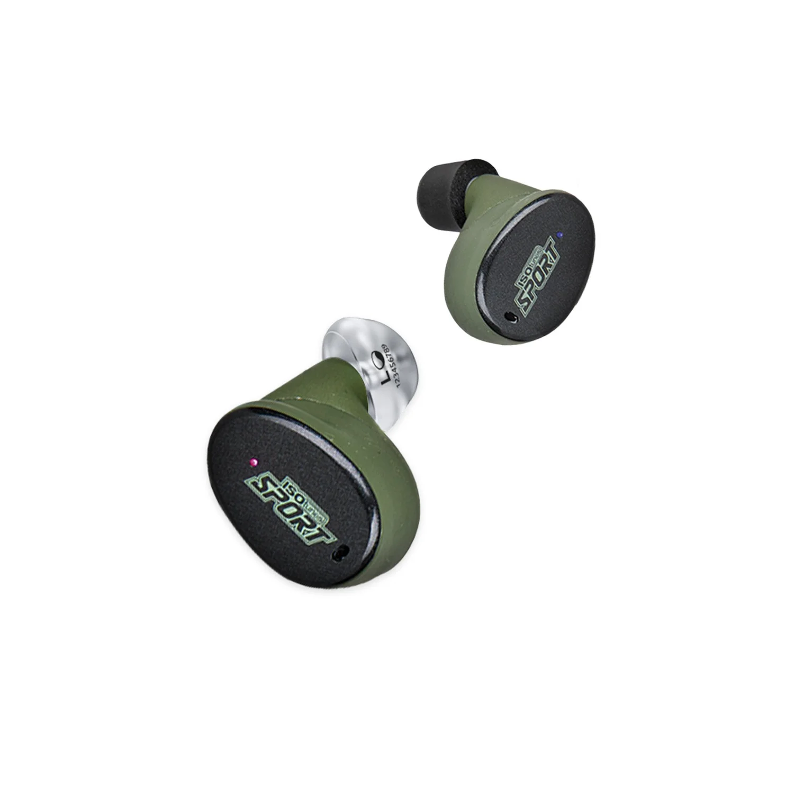
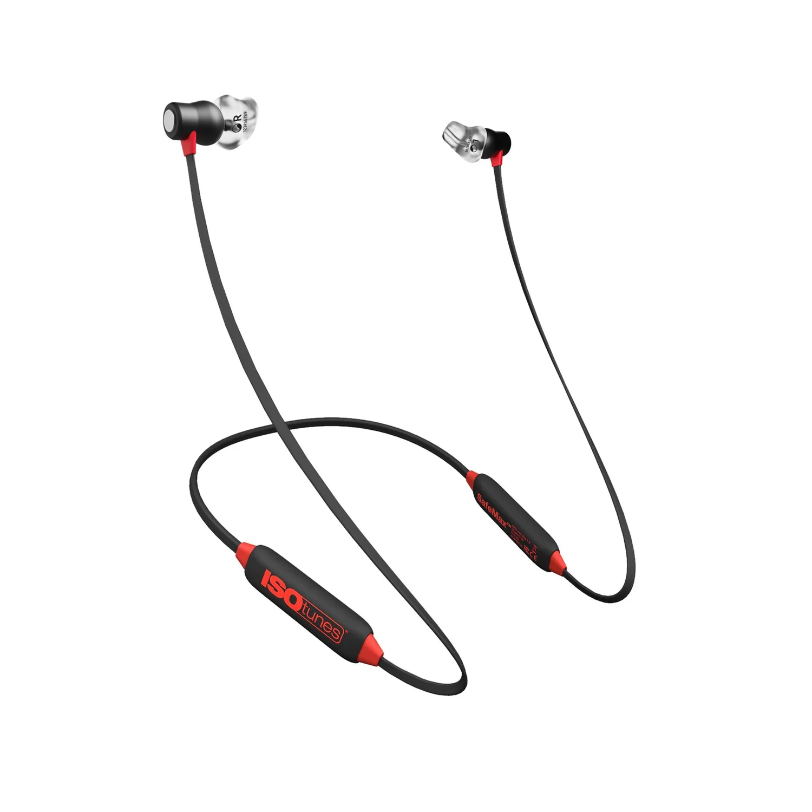
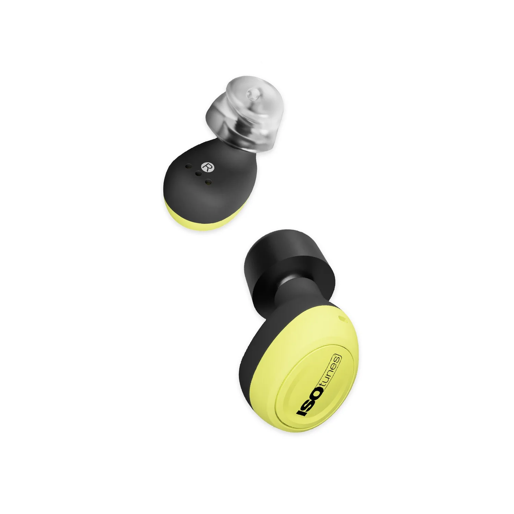

Gehörschutz
Einer für alle? Oder maßgefertigt nur für dich?
Standard-Ohrstöpsel
Sofort einsatzbereit, in wenigen Größen — passen aber nicht in jeden Gehörgang gleich gut.
Die Schutzwirkung bei Freizeit und Beruf kann schnell variieren. Nur vermeintlich günstiger — und mit sehr kurzer Lebensdauer.

Premium Maßanfertigung
- Perfekte Passform, maßgefertigt für jede individuelle Ohr-Anatomie
- Hoher Tragekomfort, auch bei längerem Tragen
- Optimaler Lärmschutz durch perfekte Abdichtung
- Extrem langlebig
Unsere Gehörschutz-Produkte
Maßgefertigte Lösungen für jeden Alltag — von Komfort bis Industrie.

bachmaier® comfort
Dein maßgefertigter Gehörschutz für Ruhe und Komfort im Alltag und in der Freizeit.
Features
- 3 Bauformen (mini, classic, plus) für individuellen Komfort
- Schalldämmendes Design — spürbar weniger Lärm (SNR bis 31 dB)
- 13 Farben, optional mit Namensgravur, Glanzfinish oder Halteband
- Weiches Silikon — bequem beim Seitenschlafen oder unter dem Helm
- Pflegeleicht, robust und 100 % maßgefertigt
Einsatzbereich
ab 160 €
bachmaier® protect
Maßgefertigter Gehörschutz für maximale Sicherheit — wenn's laut, staubig und hart zur Sache geht.
Features
- 3 Bauformen (mini, classic, plus) für den perfekten Sitz
- EN 352-2:2020 zertifiziert
- A1:2024 zertifiziert
- 7 Filtervarianten für individuell optimale Dämmung
- 13 Farben für deinen persönlichen Stil
- Optional mit Namensgravur oder Halteband
Einsatzbereich
ab 190 €
bachmaier® fidelity
Maßgefertigter Gehörschutz für natürliches Hören und höchsten Klangkomfort.
Features
- 2 Bauformen (classic, plus) für perfekten Sitz
- Lineare Filtertechnologie für naturgetreuen Sound
- EN 352-2:2020 & A1:2024 zertifiziert
- SNR-Wert bis zu 25 dB — optimal für Musik & Sprache
- 13 Farben für deinen persönlichen Stil
- Optional mit Halteband für festen Sitz im Einsatz
Einsatzbereich
ab 160 €
bachmaier® water
Maßgefertigter Wasserschutz für trockene Ohren und grenzenloses Wasservergnügen.
Features
- Maßgeschneidert nach deiner Ohrabformung
- Reiner Wasserschutz, perfekt für empfindliche Ohren
- Schwimmt auf der Wasseroberfläche — leicht zu finden
- Zwei optimierte Formen — ideal auch für Kinder und kleine Ohren
Einsatzbereich
ab 160 €
ISOtunes CALIBER + bachmaier® plugs
True Wireless Bluetooth-Gehörschutz für Jäger und Schützen.
Features
- Schalldämmwert von 32 dB (SNR)
- SafeMax™-Technologie (Lautstärke überschreitet niemals 82 dB)
- Akkulaufzeit bis zu 13 Stunden
- Tactical Sound Control™ — Hörvermögen um das Achtfache gesteigert, Impulsschall in unter 2 ms gedämmt
- Bluetooth 5.2
- Ladeetui für 2 volle Ladungen
Einsatzbereich
ab 385 €
ISOtunes XTRA 2.0 + bachmaier® plugs
Bluetooth-Gehörschutz für Arbeit, Hobby und Freizeit.
Features
- Lautstärkebegrenzung 36 dB (SNR)
- IP 67 & EN 352-2:2020 zertifiziert
- Steuertasten am Nackenbügel
- Akkulaufzeit bis zu 11 Stunden
- Bluetooth 5.0
- Magnetische Ohrstöpsel für zuverlässigen Halt
Einsatzbereich
ab 295 €
ISOtunes FREE + bachmaier® plugs
Bluetooth-Gehörschutz für Arbeit, Reisen und Alltag.
Features
- Schalldämmwert von 31 dB (SNR)
- SafeMax™-Technologie (Lautstärke überschreitet niemals 79 dB)
- Akkulaufzeit bis zu 7 Stunden
- ISOtunes AptX™ Technologie für beeindruckenden Klang
- Bluetooth 5.2
- Ladeetui für 14 weitere Stunden
Einsatzbereich
ab 315 €